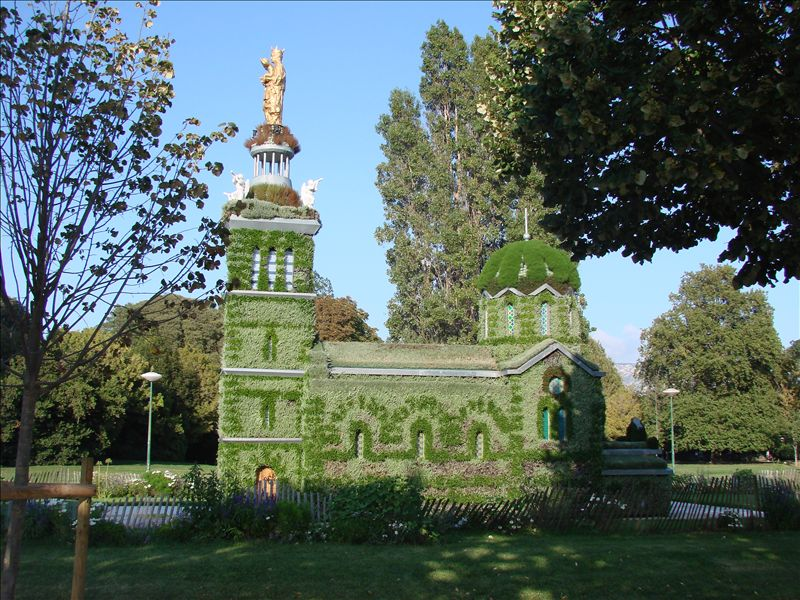

Marseille Espace Vert
parcs, jardins, espaces verts de voirie, cimetières, squares...
Ce patrimoine est en augmentation constante et permet
d’offrir aux Marseillais un panel d’aménagements variés et ludiques.
Marseille possède aujourd’hui 58 parcs d’une superficie supérieure à 1 hectare,
dont 16 de plus de 5 hectares. En Voici quelque uns :
Parc Borély
Le parc Borély est un des parcs et jardins publics de Marseille, du quartier de Bonneveine dans le 8earrondissement de Marseille. Historiquement associé au château Borély et hippodrome-golf Marseille
Borély, à proximité des plages du Prado, au bout de la corniche du Président-John-Fitzgerald-Kennedy, il
est labellisé « jardin remarquable ».



(fondé au xviiie siècle par la richissime famille marseillaise Borély). La partie centrale des 54
hectares de l'ancien domaine est alors aménagée entre 1860 et 1880, lors d'un plan d'urbanisme à
Marseille, en parc et jardin public Borély de 17 hectares (inauguré en 1864) par le
paysagiste-architecte Adolphe Alphand (illustre collaborateur du baron Hausmann sous le Second Empire)
et en hippodrome-golf Marseille Borély de 15 hectares (inauguré le 4 novembre 1860).
Palais Longchamp
Le palais Longchamp est un palais-château d'eau de style néo-classique-Second Empire du xixe siècle, duquartier Cinq-Avenues du 4e arrondissement de Marseille, dans les Bouches-du-Rhône en
Provence-Alpes-Côte d'Azur. Le site est inscrit aux monuments historiques depuis le 1er octobre 1974 et
classé depuis le 18 novembre 1997 et 8 septembre 19991.

- le pavillon-château d'eau central,
réservoir d'eau de la Durance arrivée par le canal de Marseille de 85 km,
à titre de principale source historique d'eau potable et d'assainissement de la ville de Marseille. - le musée des Beaux-Arts de Marseille (dans l'aile gauche du palais)
- le muséum d'histoire naturelle de Marseille (dans l'aile droite du palais,
sous la tutelle du ministère de l'Enseignement supérieur et de la Recherche,
classé musée de France en 2002). - un jardin public (devant) avec espace vert,
bassins en cascades, et statues allégoriques à la gloire de l'eau, de la fertilité, et de l'abondance. - le parc Longchamp (à l'arrière du palais) avec observatoire de Marseille,
jardin botanique, et parc zoologique
(les animaux sont remplacés par des sculptures animalières d'art depuis Marseille-Provence 2013).
Parc du 26e Centenaire
Situé en plein cœur de Marseille, le Parc du 26e centenaire s’étend sur 10,5 hectares.Il a été aménagé sur le site de l'ancienne gare du Prado.


Lorsqu’en 1998, la Ville de Marseille achète le terrain à la SNCF,
il y a longtemps que la gare ne sert plus qu’à la formation des
trains transportant les ordures ménagères vers la décharge
d’Entressen.
Pour la municipalité, la création du parc est alors un moyen de
restaurer un tissu urbain "déchiré" par un site industriel à l’abandon.
De plus, la municipalité souhaite,
grâce à cet espace vert de détente et de passage, recréer le lien qui
existait entre les trois quartiers bordant la gare.
Les travaux ont commencé à l'automne 1999.
Le parc a été inauguré le 23 juin 2001.
De conception très contemporaine,
le parc s’inscrit cependant dans la mémoire commune, faisant référence
aux vingt-six siècles d’histoire de la Ville.
Certains vestiges conservés de la gare sont les témoins
d’un passé encore vivant dans le souvenir de nombreux Marseillais.
L’eau y est omniprésente et fait écho à "l’Arbre de l’Espérance"
il y a longtemps que la gare ne sert plus qu’à la formation des
trains transportant les ordures ménagères vers la décharge
d’Entressen.
Pour la municipalité, la création du parc est alors un moyen de
restaurer un tissu urbain "déchiré" par un site industriel à l’abandon.
De plus, la municipalité souhaite,
grâce à cet espace vert de détente et de passage, recréer le lien qui
existait entre les trois quartiers bordant la gare.
Les travaux ont commencé à l'automne 1999.
Le parc a été inauguré le 23 juin 2001.
De conception très contemporaine,
le parc s’inscrit cependant dans la mémoire commune, faisant référence
aux vingt-six siècles d’histoire de la Ville.
Certains vestiges conservés de la gare sont les témoins
d’un passé encore vivant dans le souvenir de nombreux Marseillais.
L’eau y est omniprésente et fait écho à "l’Arbre de l’Espérance"
qui se dresse à l’entrée principale.
Les jets d'eau ont été conçus comme des fontaines ornementales.
Il ne s'agit donc pas d'aires de jeux (risques pour les enfants).
Il ne s'agit donc pas d'aires de jeux (risques pour les enfants).